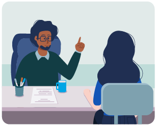

Lea con atención el siguiente caso

En la “Universidad UCTA” se viene ofreciendo un curso de Habilidades comunicativas para todos los estudiantes de todas las carreras que ingresan al primer semestre. Estos alumnos en promedio están entre los 17 y 24 años, son de estrato 1, 2 y 3, y presentan dificultades en el desarrollo de sus competencias comunicativas. Justamente este curso está pensado para activar el desarrollo de las habilidades de escritura, lectura y expresión oral. En la reforma curricular que adelanta la Universidad decidieron contratar un equipo de expertos para ajustar este curso, el equipo seleccionado es el de ustedes.
Para realizarlo les proponemos dos momentos:
Momento 1
Momento 2
Ahora deben definir ¿cómo se va a enseñar? La respuesta a esta pregunta se llama didáctica.
En este momento, la “Universidad UCTA” le entrega a su equipo el programa de curso que se pretende ajustar.
De aquí en adelante, deben trabajar haciendo los ajustes en el documento en línea del programa del curso y tener en cuenta las siguientes indicaciones y precisiones conceptuales:
Didáctica
“La didáctica, en primera instancia, cobija el proceso de enseñanza aprendizaje en tanto relaciona el maestro con sus alumnos a través de la cultura” (Álvarez de Zayas y González Agudelo, 2003).
Existen algunos principios de la didáctica que se deben tener en cuenta:
- Sistematización
-
Sistematización
tiene que ver con mostrar cómo se relacionan o encadenan los contenidos y las actividades que se desarrollan, y debe comprender un orden lógico para el abordaje de los mismos. Usualmente, lo más indicado es un proceso inductivo; ir de lo simple a lo complejo.
- Enlace entre la práctica y la teoría
-
Enlace entre la práctica y la teoría
una tradición pedagógica hizo que en el imaginario general de los educadores se definiera que primero es la teoría y luego la práctica, pero esta premisa (que se extendió a todas las esferas) no es la más acertada en todos los casos. Anteriormente, se mencionó que una manera de sistematizar era la inducción. Esto tiene que ver con la idea de teorizar, ya que es fundamental tener un referente práctico. En otras palabras, a la teoría la precede la práctica, por eso se recomienda entonces que siempre exista una práctica y una teoría, y que en ningún caso todo sea absolutamente práctico o absolutamente teórico.
- Unidad de lo concreto y lo abstracto
-

Unidad de lo concreto y lo abstracto
así como es indispensable la articulación entre la práctica y la teoría, también es fundamental la relación armónica entre lo concreto y lo abstracto. La práctica es a lo concreto, lo que la teoría a lo abstracto. Lo más abstracto usualmente viene dado por el lenguaje científico o técnico. Una buena didáctica hará que el profesor traduzca ese lenguaje abstracto a un lenguaje concreto que le permita al aprendiz irse introduciendo en la complejidad del lenguaje científico o disciplinario.
- Trabajo consciente y creador
-

Trabajo consciente y creador
el aprendizaje solamente ocurre si la persona sabe qué aprende y para qué lo aprende. Si existe conciencia del qué y el para qué, los alumnos pueden construir conocimiento. La consciencia de lo que se aprende y para qué permite que los aprendices puedan intentar otras opciones. Solamente la consciencia del aprendizaje abre paso a la creación. La creación solamente ocurre cuando existe conciencia del qué y el para qué.
- Comprensibilidad
-
Comprensibilidad
una de las características de un buen profesor es que sepa traducir el conocimiento elaborado o el conocimiento por construir. Un buen profesor tiene entre sus características obrar como un diccionario; poner en categorías del estudiante aquello que está puesto en categorías superiores, que aquello que científicos y académicos han construido pueda ser aprehensible por quienes apenas se acercan a esas construcciones.
- La atención individual
-

La atención individual
es bien sabido que no todos los alumnos son iguales, que existen diferentes inteligencias y estilos de aprendizaje. Pero también hay situaciones particulares que afectan el aprendizaje de algunos; tener en cuenta estos aspectos hace posible orientar adecuadamente cada caso. Nunca será posible hacer una educación absolutamente individualizada, pero sí es importante que el profesor tenga una mirada perspicaz para detectar casos individuales que requieran atención especial.
- Evaluación
-

Evaluación
la evaluación del aprendizaje es, en sí misma, una estrategia para aprender. Muchos aprendizajes son consolidados por los alumnos al momento de preparar y/o desarrollar las actividades de evaluación. En este sentido, un sector de la pedagogía entiende que la evaluación no solamente permite verificar el aprendizaje, sino que también permite aprender. Para lograr este efecto es muy importante que sea el primer paso de la preparación de un curso.
Revisemos la claridad obtenida sobre didáctica, emparejen cada término con su concepto.
| Mostrar cómo se relacionan o encadenan los contenidos y las actividades que se desarrollan. | ||
|---|---|---|
| El aprendizaje solamente ocurre si la persona sabe qué aprende y para qué lo aprende. | ||
| Una de las características de un buen profesor es que sepa traducir el conocimiento elaborado o el conocimiento por construir. | ||
| Tiene que ver con la idea de teorizar como un referente práctico fundamental. | ||
| Un sector de la pedagogía entiende que la evaluación no solamente permite verificar el aprendizaje, sino que también permite aprender. Para lograr este efecto es muy importante que sea el primer paso de la preparación de un curso. | ||
| Una buena didáctica hará que el profesor traduzca ese lenguaje abstracto a un lenguaje concreto que le permita al aprendiz irse introduciendo en la complejidad del lenguaje científico o disciplinario. | ||
| Nunca será posible hacer una educación absolutamente individualizada, pero sí es importante que el profesor tenga una mirada perspicaz para detectar casos individuales que requieran atención especial. |